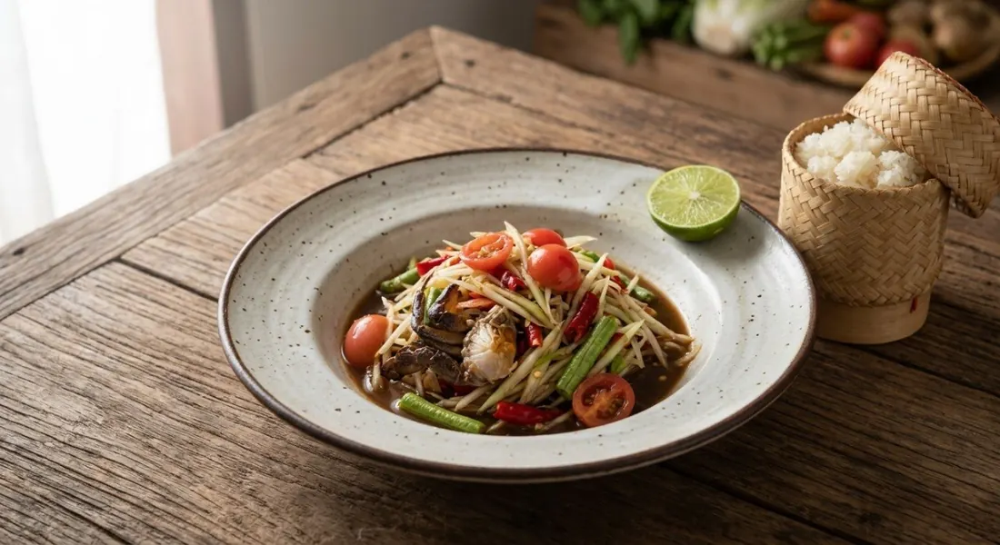

The papaya salad at full Isaan strength — pounded crab, boiled pla ra, chillies and garlic, lime sharp over shredded papaya. Not the tourist version.

ส้มตำปูปลาร้า is som tum with both of Isaan's signature pungencies: ปลาร้า, fermented fish, and ปูเค็ม, salted field crab — the small freshwater crabs salted whole in the shell, then broken into the mortar so their shells and brine season the salad. The Sanook source opens with the right frame: "the essentials are pickled crab and pla ra in whatever style you like — then season it to your own tongue."
The technique is the mortar. Garlic and both fresh and dried chillies pounded first, then the dressing — boiled pla ra liquid, sugar and lime — then the crab goes in and is pounded lightly, because, as Sanook puts it, you taste the salt level from the crab before adding any fish sauce. Only then do the tomatoes get pounded in to thicken the dressing, and the shredded papaya tossed through last so it stays crisp.
The Kapook roundup adds the shop finish — กากหมู, crisp pork crackling, and เม็ดกระถิน, lead tree seeds — on top, and its six recipes run the dish through its variants: the classic, the party-size ส้มตำถาด tray, and versions with cucumber or rice noodles standing in for papaya. One safety note every source converges on: the pla ra is boiled before use.
| Thai | English | Amount |
|---|---|---|
| มะละกอสับ | Green papaya, shredded | 150 g |
| แครอทสับ | Carrot, shredded | 60 g |
| ปูเค็ม | Salted field crabs | 2–3 |
| พริกแห้ง | Dried chillies | 4–6 |
| พริกขี้หนู | Bird's-eye chillies | 4–6 |
| กระเทียม | Garlic | 8–10 cloves |
| น้ำตาลปี๊บ | Palm or cane sugar | 1 tbsp |
| น้ำปลาร้าต้มสุก | Pla ra liquid, boiled | 2 tbsp |
| น้ำมะนาว | Lime juice | 2 tbsp |
| น้ำปลา | Fish sauce | 1–2 tbsp |
| มะเขือเทศ | Tomatoes (sida + firm) | 6–8 |
Loaded extras (Sanook): 15–20 blanched cockles and 100 g blanched moo yor sausage. Kapook's shop finish: pork crackling (กากหมู) and lead tree seeds (เม็ดกระถิน) scattered on top.
Salted crab vs pickled crab. Cookpad uses ปูเค็ม (salted field crab); Sanook uses ปูดอง (pickled crab). Both are the same small freshwater crabs preserved whole — the difference is brine versus a longer pickle. Either seasons the salad; the shells stay in.
Carrot or not. Sanook shreds carrot with the papaya; Cookpad's home version is papaya only. The carrot is a central-Thai softening; the Isaan original doesn't need it.
When the crab goes in. Sanook pounds the crab before the final seasoning so its salt is counted; Kapook adds it after the dressing is balanced. Both work — the first is more precise, the second faster.
What's on top. Kapook finishes with pork crackling and lead tree seeds; Sanook loads the salad itself with cockles and moo yor. The classic is naked; the extras are regional showmanship.
Boiled or raw pla ra. Sanook specifies boiled pla ra; the home recipes assume it. Boiling is the safe version — raw pla ra carries the risk that keeps some people away from the dish.
This recipe is translated from the following Thai-language sources. Where they disagree, we've said so.
1. Sanook (Uranee) — "วิธีทำส้มตำปูปลาร้า อาหารอีสานสูตรแซ่บทรงเครื่อง" (the recipe used here) — sanook.com
2. Cookpad (Kaimook) — "ส้มตำปูปลาร้าแซ่บๆ" (home version, 15 minutes) — cookpad.com
3. Kapook — "6 เมนูส้มตำปลาร้า อาหารอีสานสูตรแซ่บนัวสะท้านลิ้น" (the classic + tray + crackling variants) — cooking.kapook.com